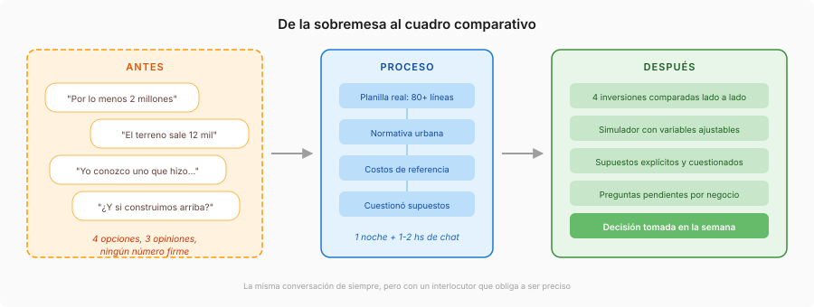
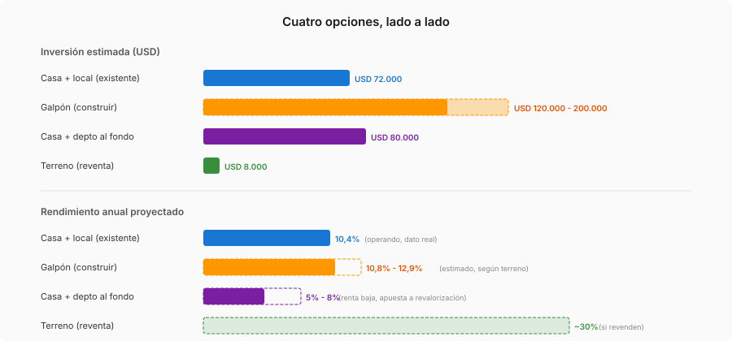

Tres socios tienen una inversión inmobiliaria en marcha: una casa y un local comercial que compraron a USD 72.000, pusieron a alquilar con un mes de obra liviana, y a los 19 meses operan con un retorno anualizado cercano al 29%. Quieren repetir el éxito con una segunda inversión, pero las opciones sobre la mesa no se parecen entre sí.
En una cena surgieron cuatro alternativas: un galpón para construir desde cero en un terreno de 500m², una casa grande con departamento al fondo que el dueño no logró vender, un terreno barato de alguien que emigra con apuro, y la opción de no hacer nada y seguir acumulando con lo que ya funciona. Cada negocio tiene distinto monto, distinto riesgo, distinto plazo. Compararlos de memoria, entre medialunas y vino, no alcanza.
Qué hicimos

Nadie llegó a la cena pensando "después pasamos esto por Claude". Pero al día siguiente, uno de los socios empezó a compartir lo conversado para darle un poco de orden. Lo que arrancó como "organizame estas notas" se convirtió en algo bastante más útil.
Primero, los datos duros. El agente procesó la planilla real de la propiedad existente: más de 80 movimientos desde mediados de 2024 (alquileres cobrados, gastos, reparaciones, distribuciones entre socios). Categorizó cada línea y calculó métricas concretas: rendimiento bruto y neto, tasa de retorno, tiempo de recupero. Hubo correcciones: un gasto de USD 2.357 clasificado como parte de la compra resultó ser un estudio de prefactibilidad. Eso solo cambió la base de inversión de USD 74.400 a USD 72.000 y movió todos los indicadores.
Después, las opciones nuevas. Cada alternativa se cargó con sus variables: superficie, costo de construcción por metro cuadrado, renta estimada, precio de compra. Para el galpón, el agente verificó los costos de referencia del Consejo Profesional de Agrimensores e Ingenieros y analizó la normativa urbana de la zona. Ahí apareció una restricción que ninguno tenía en la cabeza: el código urbano limitaba la construcción en planta baja a 300m², no los 500m² que se habían asumido. Se podía construir un segundo piso, pero eso cambiaba radicalmente el costo y el tipo de inquilino.
Lo que no se esperaba. Cuando los socios trajeron una renta estimada de 2,5 millones de pesos por mes (dato de otros inversores en galpones), el agente advirtió que las personas que ya invirtieron tienen incentivo a ser optimistas sobre su propio mercado. Sugirió verificar con inmobiliarias, no solo con inversores. El número bajó a 2,2 millones, y esa diferencia movió la rentabilidad proyectada de forma visible.
Con todo cargado, Claude armó un tablero interactivo: comparativa lado a lado de las cuatro opciones, simulador con controles para ajustar cada variable en tiempo real, proyección a 10 años, y una lista de preguntas pendientes por negocio. Todo el proceso: una noche de sobremesa y una o dos horas de chat al día siguiente.
Lo que no es obvio
Lo más valioso no fue el tablero ni los números. Fue tener un interlocutor que obligara a ser preciso.
Cuando una estimación pasa de "por lo menos dos millones" a "2,2 millones verificados con dos fuentes", la conversación entre socios cambia. Ya no se discute desde la intuición de cada uno, sino desde un modelo compartido donde cada supuesto está explícito y se puede cuestionar. El que más sabe de construcción ajusta los costos. El que conoce la zona corrige las rentas. El que mira los números ve qué variable mueve más la aguja.
El tablero fue software personal y efímero: cumplió su función durante la discusión y no necesita mantenimiento. El valor no estaba en la herramienta sino en el proceso de construirla, porque construirla obligó a definir qué se sabía, qué se suponía, y qué faltaba averiguar.
La decisión salió esa misma semana. Descartaron el galpón (demasiada obra e inversión para el retorno incremental), descartaron el terreno solo (rentabilidad poco clara), y fueron por una casa con departamento al fondo: una estructura parecida a la que ya les funciona.
El mismo patrón, fuera de inmuebles

- Socios de un consultorio médico evaluando si expandirse a un segundo local, sumar un especialista, o comprar equipamiento. Cada opción tiene distinto costo, distinto riesgo, y distinto plazo de retorno. Un agente estructura la comparación y obliga a explicitar los supuestos de cada socio.
- Familia decidiendo entre refaccionar o comprar. Los números que cada uno tiene en la cabeza nunca coinciden. Un agente procesa presupuestos reales, los pone lado a lado, y marca qué falta cotizar antes de decidir.
- Productores agropecuarios eligiendo entre cultivos o inversiones para la próxima campaña. Cada opción depende de variables diferentes (clima, precio internacional, costo de insumos). Un agente arma escenarios y muestra qué pasa si cambia cada una.
- Socios de un bar evaluando si abrir una segunda sucursal, ampliar el actual, o invertir la ganancia en otra cosa. La charla de siempre, pero con números que todos pueden ver y cuestionar.
Tute Costa es Staff Software Engineer con más de diez años en desarrollo. Trabaja en tutecosta.com y publica en withatwist.dev. RailsPilot.ai es su servicio de desarrollo aumentado con IA.